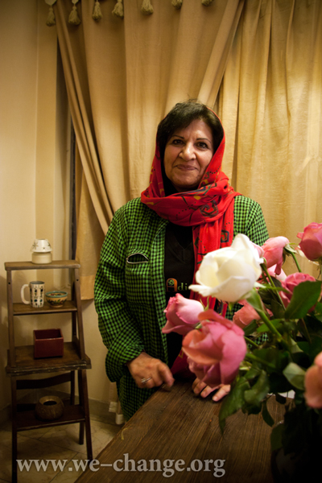
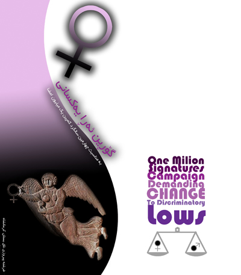
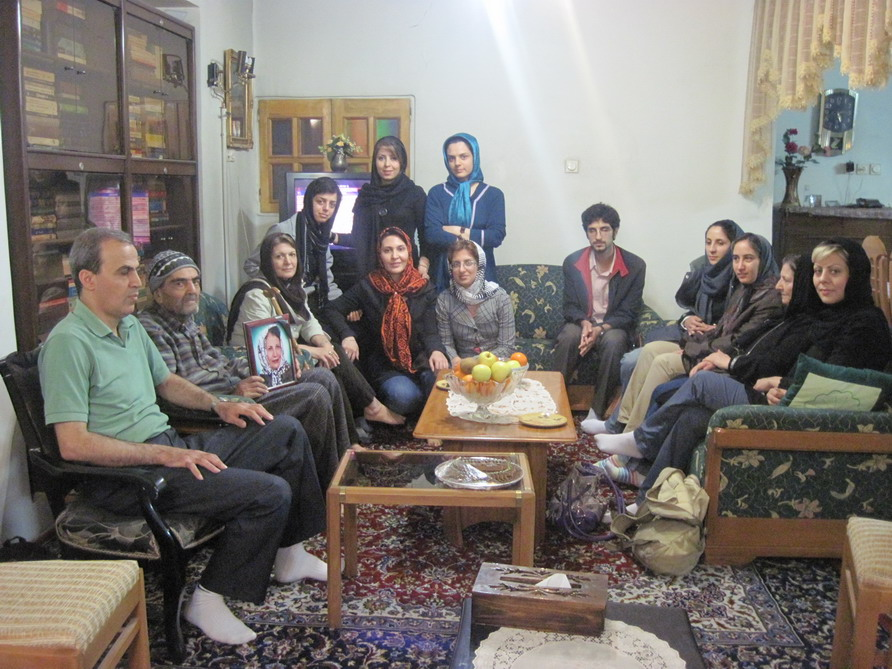
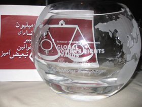
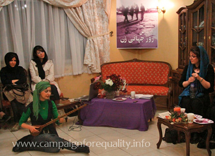
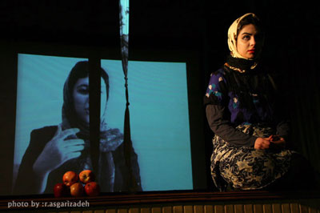
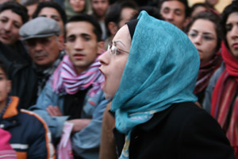

|
|
Report
Latest update – Saturday 15 September 2012.
Articles in this section
- 15 September 2012

By: Raha Asgarizadeh
- 9 January 2012

- 3 June 2011
Video messages from human rights and women’s rights activists around the world in honor of Nasrin Sotoudeh and Abdollah Momeni
- 31 March 2011
Women’s Rights Activists Visit with Families of Imprisoned Activists, Nasrin Sotoodeh, Bahareh Hedayat and Mahdieh Golroo
Translated by: Sussan Tahmasebi
- 22 February 2011

- 29 August 2010

Anniversary Special
- 14 April 2010

- 13 April 2010

- 8 March 2010

- 26 November 2009

- 5 May 2009

- 24 March 2009

- 17 March 2009

Photos by Aida Sadat and Nasim Khosravi
- 9 January 2009
- 3 December 2008

- 7 September 2008

- 30 August 2008
Anniversary Special
- 28 August 2008

Anniversary Special
- 7 May 2008

- 28 April 2008

A Report on Polygamy and Underage Brides in Zahedan*
By: Mahboube Hosseinzadeh
- 31 March 2008

- 25 March 2008

- 23 March 2008

The Campaign’s Arts Committee, Utilizes Theatre for Social Commentary
- 24 February 2008

43 Arrests in 14 Months
Compiled by: Maryam Hosseinkhah
- 20 February 2008

By: Hoda Aminian
- 16 February 2008

Women’s Legal Rights Workshop for Campaign Members
By: Maryam Malek
- 24 January 2008

A report on the protest meeting at the Association of Journalists
By: Aida Saadat and Maryam Malek; Translation by: SZ
- 24 December 2007

Tour of local courts
By: Maryam Malek; Translation: SZ
- 19 November 2007

- 2 November 2007
|